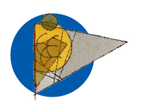

Durante la República de Weimar (1919–33), Alemania vivió una especie de boom de las artes y oficios promovida por Walter Gropius, veterano de guerra, e inspirada en el movimiento Arts and Crafts inglés. Gropius tenía en mente reconstruir la nueva Alemania destruída por la guerra, a través de una generación de jóvenes con habilidades prácticas e intelectuales. Para ello hacía falta, antes que nada, una escuela de carácter democrático y co-educativo que pudiera impartir un plan de estudios fuera de lo convencional, pensado para que cada estudiante siguiera su propio ritmo interno a nivel artístico y personal.
Nació así la Bauhaus, que estuvo presente en tres ciudades: Weimar (1919-1925), Dessau (1925-1932) y Berlín (1932-1933).
En Weimar, Gropius sentó las bases para la Bauhaus del futuro: el arte, según su manifiesto y programa, debería tener un rol social, y la división entre diferentes disciplinas creativas debería dejar de existir.
Dessau es considerado el apogeo del movimiento de la Bauhaus. Surgió después del cierre de Weimar por causas políticas, y durante este tiempo, sus miembros se embarcaron en el diseño de nuevos productos industriales para el consumo masivo. También fue aquí donde el famoso edificio de la Bauhaus fue diseñado y construido por Gropius.
Berlín fue la última fase de la Bauhaus. Debido a las crecientes presiones de los nazis y a los recortes en su financiación, el trabajo realizado durante este tiempo fue limitado. El traslado a Berlín ocurrió después del cierre de Dessau, y los maestros y estudiantes de la Bauhaus se reunieron de nuevo en octubre de 1932 en una fábrica de teléfonos abandonada. Sin embargo, el 11 de abril de 1933, el local fue registrado y cerrado por la policía y la SA.

El estilo de la Bauhaus puede describirse como una combinación del movimiento de las Artes y Oficios con el modernismo. Su intención era volver a poner el arte en contacto con la vida cotidiana. Así, los diseños típicos de la Bauhaus, ya sean en la pintura, la arquitectura o el diseño de interiores, presentan poca ornamentación y se centran en formas equilibradas y abstractas. El objetivo era borrar la distinción entre las bellas artes y las artes aplicadas.
Tocó las distintas áreas artísticas, aunque fue en la arquitectura donde más influyó. Los arquitectos utilizaban formas geométricas básicas: cuadrados, triángulos, círculos, líneas rectas y circulares que contrastaban con los estilos arquitectónicos anteriores y daban un aire de modernidad. Le daban mucha importancia a los materiales, por eso no los escondían: los pilares de metal o las vigas de madera quedaban al descubierto para mostrar la verdadera esencia del edificio. Además, este movimiento arquitectónico inspiró en gran medida el aspecto de las casas de estilo mid century modern, que tomaban prestadas las líneas limpias y el diseño funcional de los edificios de la Bauhaus.